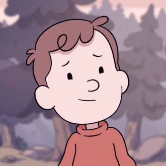

-
Hilda
About
Hilda is an extremely adventurous and fearless girl. She loves to draw in her sketchbook and is very kind to nature. She is shown not to get scared easily by monsters and can outrun and outsmart them.
-
Twig

About
Twig is a protective, trusty and brave animal who likes to help Hilda. When he is protective, he goes in front of Hilda and growls at anyone that she doesn't know when they go up to her. He also has a sharp sense of smell and is quick to realize something is not right.
-
Johanna
About
Hilda's mother is caring and supportive, but at times she can worry too much about Hilda not having any "normal" friends her age. Since she lived in Trolberg for a good portion of her childhood, she has a soft spot for the city, and had much less trouble with moving there than Hilda did.
-
David
About
David tends to be quickly scared and easily distracted, as well as a bit clumsy. It often takes his friends' encouragement to get him over his fears. David has at least one talent, that being he's a great singer. For this reason he has tried several times to audition for the Warblers, the choir of the Sparrow Scouts.
-
Frida
About
Frida is strong minded, intelligent, and highly organized, and always makes detailed plans for everything (so much in fact that Hilda actually wondered if Frida was raised by Elves).She is also competitive, always wanting to be the best. However, she tends to overthink things and tries too hard to be seen as perfect.
-
Kaisa
About
Kaisa is usually calm, but can be rather strict with rules. She has the uncanny ability to always know exactly what book people are looking for, even before they can ask her about it. Another quirky thing about her is that she has memorized the entire layout of St. Guglows Cemetery. This last thing she doesn't want to admit however.
-
Alfur Aldric
About
Alfur is a member of the Aldric Family. He loves writing reports about Trolberg to the other Aldric elves. He is mostly known for paperworks and contracts, such as contracts for the exiles from the "The Lost Clan" and paperworks so that other humans can see him, such as Hilda and Frida.